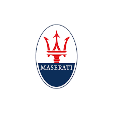

Mechatronics Engineering Student
Hi, I'm Muadz Iswahyudi
Mahasiswa Pendidikan Teknik Mekatronika UNY dengan minat kuat pada otomasi industri dan Desain grafis. Saya bersemangat dalam memecahkan masalah dan mengubah konsep teknis menjadi sistem yang fungsional serta mengaplikasikan kreatifitas untuk membuat desain yang estetik.
Learn More About Me
Tentang Saya
Saya adalah mahasiswa Pendidikan Teknik Mekatronika di Universitas Negeri Yogyakarta (UNY) yang bersemangat menjembatani rekayasa mekanis dan elektrikal dengan kekuatan perangkat lunak dan desain. Bagi saya, mekatronika bukan hanya tentang mesin; ini tentang menciptakan sistem cerdas yang efisien, fungsional, dan mudah digunakan.
Keahlian yang Saya Miliki
My Core Competencies
Saya memiliki keahlian yang terintegrasi di bidang rekayasa, pengembangan perangkat lunak, dan desain kreatif.
Otomasi & Rekayasa Industri
- Sistem Kontrol PLC
- Desain HMI (Human-Machine Interface)
- Computer Vision (OpenCV)
- CAD/CAM (SolidWorks, Autodesk Fusion 360)
- Sistem Kelistrikan & Instrumentasi
Pemrograman & Pengembangan
- Python
- C++ & C#
- SQL (Manajemen Database)
- HTML & CSS
- Git & GitHub
Desain Grafis & Multimedia
- Video Editing (Adobe Premiere Pro, CapCut)
- Desain Vektor (Adobe Illustrator, CorelDRAW)
- UI/UX Design (Figma)
- Desain Grafis (Canva)
Karya yang Pernah Saya Buat
My Projects
Berikut adalah beberapa proyek yang telah saya kerjakan untuk mengaplikasikan ilmu saya
HMI: Simulasi Produksi Batch Farmasi

Proyek UTS mata kuliah Aplikasi Pemrograman Industri. Sistem ini mensimulasikan lini produksi farmasi cair yang digerakkan oleh resep dari database (CRUD), mengontrol proses multi-tahap (penakaran, pemanasan, pendinginan), dan mencatat log setiap batch secara otomatis. Dibangun menggunakan InduSoft Web Studio dan MS Access.
Desain Feed Instagram Organisasi
Bertanggung jawab merancang dan mengelola konten visual untuk feed Instagram organisasi [Nama Organisasi], meningkatkan engagement melalui desain yang konsisten dan menarik menggunakan Figma dan Canva.
Video Editing
Membuat berbagai video promosi dan dokumentasi acara, mulai dari pengambilan gambar hingga proses editing akhir menggunakan Adobe Premiere Pro dan CapCut untuk menghasilkan output video yang dinamis.